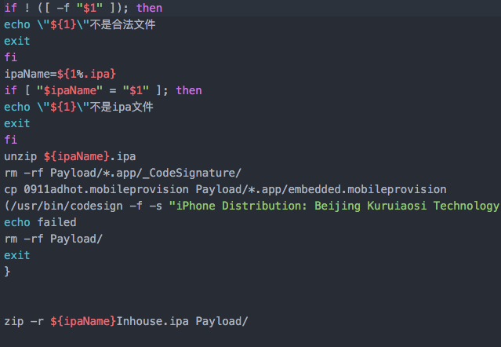
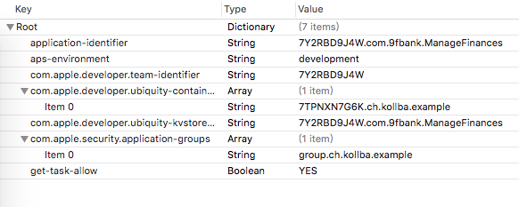

iOS hook实践（1）
最近为了玖富理财的自动化投钱，狠狠的研究了下如何hack别人的app inject自己的代码，收货良多。同时发现自己对此非常感兴趣，成就感膨胀！
so，今年多了一个目标：读完《iOS逆向工程（第二版）》，已经duokan下单，监督自己。
感谢微信，给了我进入iOS大门的机会，感谢微信，叫我系统化的iOS研究方法，给了我编写动态库和入门hack的基础，我将在此继续学习，继续充实。
一个不知道算不算开头的开头
这将是一个系列文章，包含各种学习研究过程，有生涩的基础，也有生动的实践，系列文章将伴随我的整个研究过程。
系列文章需要懂得iOS的基础知识，并且对iOS开发以及攻防有较多的兴趣的同行阅读，如果您是老鸟，请多多指正其中的不足。
本文将主要就是对近期的hack收货进行简单归集，避免忘记。
基本知识
- 越狱
- 动态库dylib
- dlopen指令
- ipa重签名
几个工具
pp助手，我也很无语，不过这个用的真心多，越狱，文件查看，ipa安装，ssh打开，真心简单易用。charles，没的说，网络分析MachOView010 EditorFLEXTHOSiOSOpenDev
重签名
如果改了原来代码，势必需要重签名，重签名是个坑，下面写两个对我有帮助的博文，稍后单独一片文章介绍我是如何踩坑的。
先来两张图，这两段代码是最后的完成稿：


iOS 证书管理、验证、打包流程，一点基础知识，小白先看看。
iOS证书及ipa包重签名探究，按照网上的一般攻略，总是失败，原来是iOS8.1后增加了安全机制。这篇是针对的一些解法，不过应该企业签名才是最终的王道解决。
代码签名探析，最详细的解析，代码重签名进阶使用。
iOS APP反重签名技术详解，知道了怎么重签，就要知道怎么攻防，避免别人用相同的方式搞你。
几篇有用的博文
http://www.blogfshare.com/inject-with-njb.html
http://wiki.jikexueyuan.com/project/ios-security-defense/injection.html
http://www.opensource.apple.com/source/dyld/dyld-210.2.3/src/dyld.cpp
http://www.cnblogs.com/xiongwj0910/archive/2012/08/16/2642992.html
https://nadavrub.wordpress.com/2015/07/23/injecting-code-to-an-ios-appstore-app/
推荐的几个很不错的博主
念茜的博客，业界知名iOS美女程序员，支付宝的iOS安全工程师
Alone_Monkey的博客，在安全领域也很有研究，真心长江后浪推前浪！
庞海礁，在重签名部分从他这里收获了很多，推荐有空看看。
自己动手在xcode6下编写dylib动态库文件
WWDC2014上发布的Xcode6在iOS上开放了动态库，可以直接通过xcode6*版本进行构建自己的framework动态库，具体可以参见New Features in Xcode 6至于具体能不能通过Appstore的审核，尚不清楚。
本文着重描述如何生成打包dylib动态库文件，对于生成dynamic framework请参见blog WWDC2014之iOS使用动态库。

Copyright © 2015 Powered by MWeb, Theme used GitHub CSS.